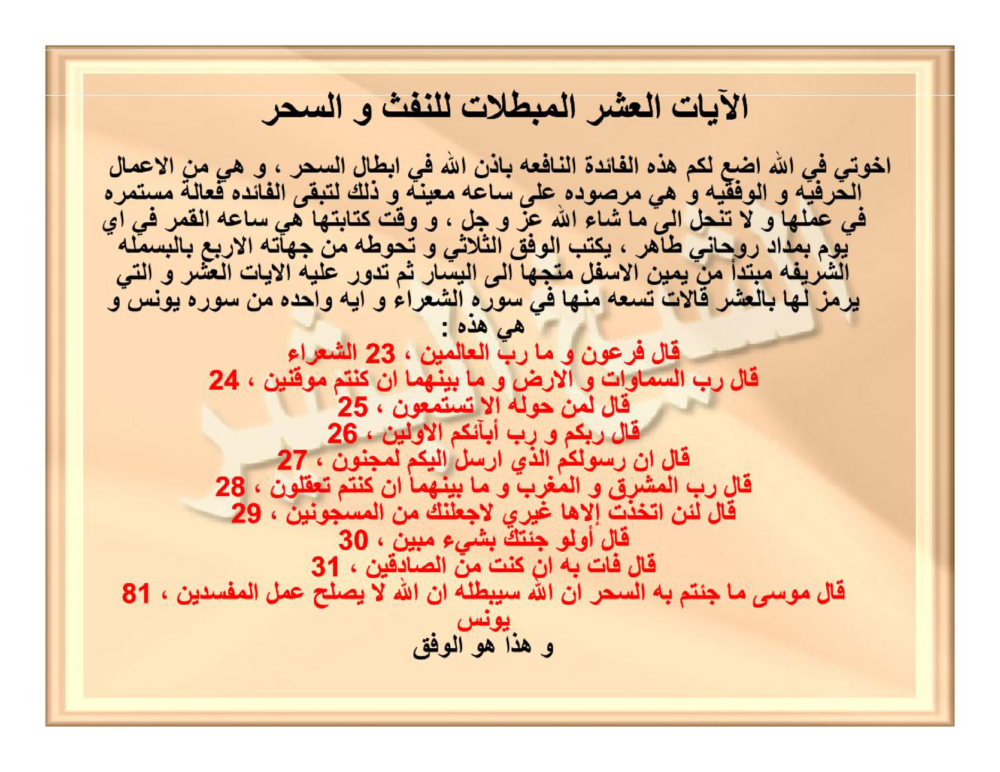

HALAMAN 27 — AL-ĀYĀTUL-'ASYRUL-MUBTHILĀT — الْآيَاتُ الْعَشْرُ الْمُبْطِلَاتُ
arab
الْآيَاتُ الْعَشْرُ الْمُبْطِلَاتُ لِلنَّفْثِ وَالسِّحْرِ
إِخْوَتِي فِي اللهِ أَضَعُ لَكُمْ هَذِهِ الْفَائِدَةَ النَّافِعَةَ بِإِذْنِ اللهِ فِي إِبْطَالِ السِّحْرِ، وَهِيَ مِنَ الْأَعْمَالِ الْحَرْفِيَّةِ وَالْوَفْقِيَّةِ، وَهِيَ مَرْصُودَةٌ عَلَى سَاعَةٍ مُعَيَّنَةٍ وَذَلِكَ لِتَبْقَى الْفَائِدَةُ فَعَّالَةً مُسْتَمِرَّةً فِي عَمَلِهَا وَلَا تَنْحَلُّ إِلَى مَا شَاءَ اللهُ عَزَّ وَجَلَّ، وَوَقْتُ كِتَابَتِهَا هِيَ سَاعَةُ الْقَمَرِ فِي أَيِّ يَوْمٍ بِمِدَادٍ رُوحَانِيٍّ طَاهِرٍ
يُكْتَبُ الْوَفْقُ الثُّلَاثِيُّ وَتُحَوِّطُهُ مِنْ جِهَاتِهِ الْأَرْبَعِ بِالْبَسْمَلَةِ الشَّرِيفَةِ مُبْتَدِئًا مِنْ يَمِينِ الْأَسْفَلِ مُتَّجِهًا إِلَى الْيَسَارِ، ثُمَّ تَدُورُ عَلَيْهِ الْآيَاتُ الْعَشْرُ وَالَّتِي يُرْمَزُ لَهَا بِالْعَشْرِ قَالَّاتٍ، تِسْعٌ مِنْهَا فِي سُورَةِ الشُّعَرَاءِ وَآيَةٌ وَاحِدَةٌ مِنْ سُورَةِ يُونُسَ، وَهِيَ هَذِهِ
١، ﴿قَالَ فِرْعَوْنُ وَمَا رَبُّ الْعَالَمِينَ﴾ [الشُّعَرَاءِ: ٢٣]
٢، ﴿قَالَ رَبُّ السَّمَاوَاتِ وَالْأَرْضِ وَمَا بَيْنَهُمَا إِنْ كُنْتُمْ مُوقِنِينَ﴾ [الشُّعَرَاءِ: ٢٤]
٣، ﴿قَالَ لِمَنْ حَوْلَهُ أَلَا تَسْتَمِعُونَ﴾ [الشُّعَرَاءِ: ٢٥]
٤، ﴿قَالَ رَبُّكُمْ وَرَبُّ آبَائِكُمُ الْأَوَّلِينَ﴾ [الشُّعَرَاءِ: ٢٦]
٥، ﴿قَالَ إِنَّ رَسُولَكُمُ الَّذِي أُرْسِلَ إِلَيْكُمْ لَمَجْنُونٌ﴾ [الشُّعَرَاءِ: ٢٧]
٦، ﴿قَالَ رَبُّ الْمَشْرِقِ وَالْمَغْرِبِ وَمَا بَيْنَهُمَا إِنْ كُنْتُمْ تَعْقِلُونَ﴾ [الشُّعَرَاءِ: ٢٨]
٧، ﴿قَالَ لَئِنِ اتَّخَذْتَ إِلَهًا غَيْرِي لَأَجْعَلَنَّكَ مِنَ الْمَسْجُونِينَ﴾ [الشُّعَرَاءِ: ٢٩]
٨، ﴿قَالَ أَوَلَوْ جِئْتُكَ بِشَيْءٍ مُبِينٍ﴾ [الشُّعَرَاءِ: ٣٠]
٩، ﴿قَالَ فَأْتِ بِهِ إِنْ كُنْتَ مِنَ الصَّادِقِينَ﴾ [الشُّعَرَاءِ: ٣١]
١٠، ﴿قَالَ مُوسَى مَا جِئْتُمْ بِهِ السِّحْرُ إِنَّ اللهَ سَيُبْطِلُهُ إِنَّ اللهَ لَا يُصْلِحُ عَمَلَ الْمُفْسِدِينَ﴾ [يُونُسَ: ٨١]
وَهَذَا هُوَ الْوَفْقُ
latin
Al-āyātul-'asyrul-mubthilātu lin-naftsi was-sihri.
Ikhwatī fillāhi adha'u lakum hādzihil-fā'idatan-nāfi'ata bi-idznillāhi fī ibthālis-sihri, wa hiya minal-a'mālil-harfiyyati wal-wafqiyyati, wa hiya marshūdatun 'alā sā'atin mu'ayyanatin wa dzālika li-tabqal-fā'idatu fa''ālatan mustamirratan fī 'amalihā wa lā tanhallu ilā mā syā'allāhu 'azza wa jalla, wa waqtu kitābatihā hiya sā'atul-qamari fī ayyi yaumin bi-midādin rūhāniyyin thāhirin.
Yuktabul-wafquts-tsulātsiyyu wa tuhīthuhu min jihātihil-arba'i bil-basmalatisy-syarīfati mubtadi'an min yamīnil-asfali muttajihan ilal-yasāri, tsumma tadūru 'alaihil-āyātul-'asyru wal-latī yurmazu lahā bil-'asyri qāllātin, tis'un minhā fī sūratisy-syu'arā'i wa āyatun wāhidatun min sūrati Yūnusa, wa hiya hādzihī:
1. Qāla Fir'aunu wa mā Rabbul-'ālamīna (QS. asy-Syu'arā': 23)
2. Qāla Rabbus-samāwāti wal-ardhi wa mā bainahumā in kuntum mūqinīna (QS. asy-Syu'arā': 24)
3. Qāla li-man haulahū alā tastami'ūna (QS. asy-Syu'arā': 25)
4. Qāla rabbukum wa rabbu ābā'ikumul-awwalīna (QS. asy-Syu'arā': 26)
5. Qāla inna rasūlakumul-ladzī ursila ilaikum lamajnūnun (QS. asy-Syu'arā': 27)
6. Qāla Rabbul-masyriqi wal-maghribi wa mā bainahumā in kuntum ta'qilūna (QS. asy-Syu'arā': 28)
7. Qāla la'init-takhadzta ilāhan ghairī la-aj'alannaka minal-masjūnīna (QS. asy-Syu'arā': 29)
8. Qāla awalau ji'tuka bi-syai'im-mubīnin (QS. asy-Syu'arā': 30)
9. Qāla fa'ti bihī in kunta minash-shādiqīna (QS. asy-Syu'arā': 31)
10. Qāla Mūsā mā ji'tum bihis-sihru innallāha sayubthiluhū innallāha lā yushlihu 'amalal-mufsidīna (QS. Yūnus: 81)
Wa hādzā huwal-wafqu:
Wafaq musallas 3×3 (lihat Hal. 28) — ditulis dengan angka asror dan dibingkai basmalah.
Terjemahan
Sepuluh ayat pembatal hembusan dan sihir.
Wahai saudara-saudaraku karena Allah, aku letakkan untuk kalian faedah yang bermanfaat ini dengan izin Allah dalam membatalkan sihir. Ia termasuk amalan huruf dan wafaq yang telah diikat pada jam astrologi tertentu agar faedah tetap فعال terus-menerus dalam kerjanya dan tidak terlepas hingga Allah 'azza wa jalla menghendaki. Waktu penulisannya ialah pada jam Bulan (sā'atul-qamar) di hari apa pun dengan tinta ruhani yang suci.
Wafaq tsulātsī (3×3) ditulis dan dikelilingi dari empat arahnya dengan basmalah yang mulia, dimulai dari kanan bawah menuju ke kiri, kemudian sepuluh ayat tersebut — yang diistilahkan sebagai sepuluh “qālā” — diputar mengelilinginya; sembilan di antaranya dari Surah asy-Syu'arā' dan satu ayat dari Surah Yūnus, yaitu:
1. Fir'aun berkata: Siapakah Tuhan semesta alam? (QS. asy-Syu'arā': 23)
2. Musa menjawab: Tuhan langit dan bumi dan apa yang ada di antara keduanya, jika kamu orang-orang yang yakin. (QS. asy-Syu'arā': 24)
3. Fir'aun berkata kepada orang di sekelilingnya: Apakah kalian tidak mendengarkan? (QS. asy-Syu'arā': 25)
4. Musa berkata: Tuhanmu dan Tuhan nenek moyangmu yang terdahulu. (QS. asy-Syu'arā': 26)
5. Fir'aun berkata: Sesungguhnya rasul kalian yang diutus kepada kalian benar-benar orang gila. (QS. asy-Syu'arā': 27)
6. Musa berkata: Tuhan timur dan barat dan apa yang ada di antara keduanya, jika kalian berakal. (QS. asy-Syu'arā': 28)
7. Fir'aun berkata: Sungguh jika kamu mengambil tuhan selain aku, pasti aku akan menjadikanmu termasuk orang yang dipenjara. (QS. asy-Syu'arā': 29)
8. Musa berkata: Apakah seandainya aku datang kepadamu dengan sesuatu yang nyata? (QS. asy-Syu'arā': 30)
9. Fir'aun berkata: Datangkanlah hal itu jika kamu termasuk orang yang benar. (QS. asy-Syu'arā': 31)
10. Musa berkata: Apa yang kalian datangkan adalah sihir; sesungguhnya Allah akan membatalkannya; sesungguhnya Allah tidak memperbaiki perbuatan orang-orang yang berbuat kerusakan. (QS. Yūnus: 81)
Dan inilah wafaqnya (lihat Hal. 28).
Syarah dan Penjelasan
Rahasia “al-‘Asyr Qālā t” — sepuluh dialog tauhid Nabi Musa melawan Fir‘aun: sembilan ayat asy-Syu‘arā’ membangun hujjah tauhid yang ditutup puncak QS. Yūnus 81 (innallāha sayubthiluhū), sehingga melahirkan gelombang penghancur buhul sihir apapun. Penulisan pada Sā‘atul-Qamar melambangkan cairan dan penerimaan materi, memastikan tinta za‘faran meresap permanen (marshūdah). Kombinasi minum & usap tubuh: wafaq dilebur dengan air suci lalu dibacakan 10 ayat 9×, airnya diminumkan dan diusapkan untuk melunturkan sihir dari kulit hingga organ dalam.
Khususiyah dan Tatacara Praktik
Garansi permanen (lā tanhallu): dirancang pada jam Bulan agar tidak luntur oleh waktu. Spesifik penghancur sihir buhul hembusan (an-naffātsāti fil-‘uqad) — tali/ikatan yang ditiup mantra.

[Gambar: HALAMAN 27 — AL-ĀYĀTUL-'ASYRUL-MUBTHILĀT — الْآيَاتُ الْعَشْرُ الْمُبْطِلَاتُ]